Getting Started
Overview
Thank you for choosing Revest as your best choice. We hope this documentation will help you get started and make the most out of your experience.
We made Revest from the ground-up with flexibility in mind. Each
element of Revest is extremely customizable, where you can make
Revest to reflect your own branding styles.
The guide gives you detailed methodologies about how you can customize Revest and make it fit your brand perfectly!
Technologies Used
We use the following technologies
- Laravel: version 11.9
- PHP: version 8.3
- MySQL: version 8.0
- HTML: HTML5
- CSS: CSS3
- JavaScript: ES6
- Bootstrap: version 5.0.2 for Frontend
- Tailwind: version 3.4.13 for Admin Panel
- jQuery: version 3.7.1
Requirements to Install
We need the following technologies to run the Revest
- PHP 8.2+
- MySQL: 8.0+
- Intl PHP Extension
- Curl PHP Extension
- GD PHP Extension
- Gettext PHP Extension
- GMP PHP Extension
- Mbstring PHP Extension
- Exif PHP Extension
- MySQL PHP Extension
- Pdo_mysql PHP Extension
- Zip PHP Extension
Installation on Server
Follow the steps below to install Revest on your server
- Login to your server and navigate database wizard. Create a new database and database-user. Keep database user, database name, and database password for future use 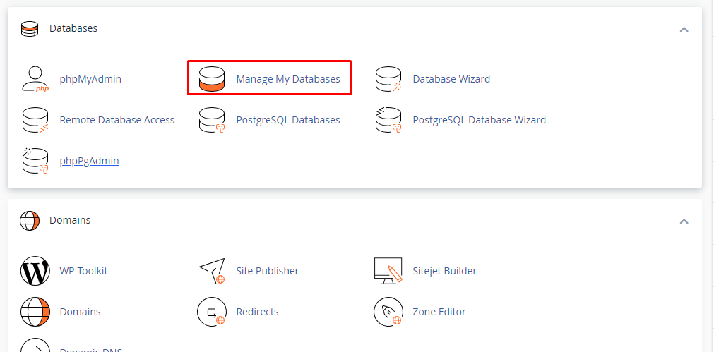
- Open file manager and Upload the project zip file to the server desired folder
- Select the project zip file to upload 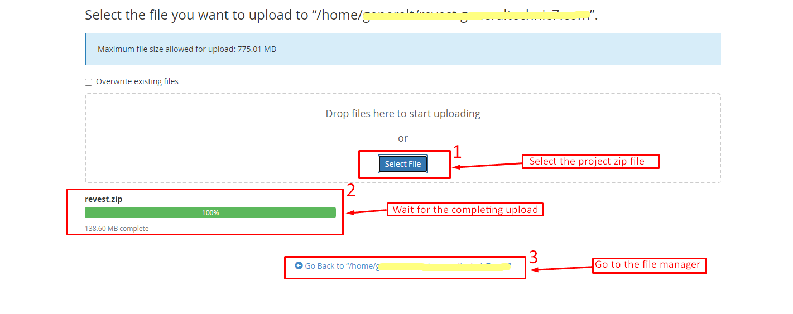
- Extract the uploaded zip file 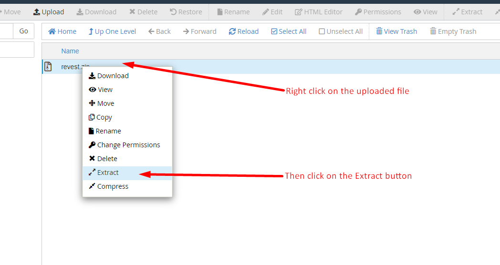
- After the successfull extracting, you can see the below result 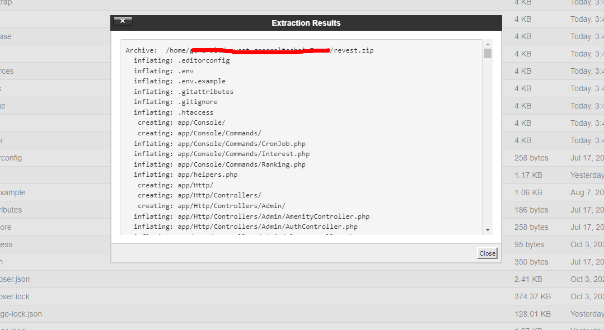
- Open http://your_domain/installer in your browser
- If everything is ok, can see the below installation wizard
- Click on I Agree, Next Step button to continue
- In this step, You will see the Project requirements page. If every requirements are met, You can proceed to next step. Otherwise You may install the required extension to your system
- Click on Next Step button to continue
- Now you will see the Foldder Permission page. If permissions are ok, You can proceed to next step. Otherwise You may give permissions to the folder
- Click on Next Step button to continue
- Now you will see the Install Information page. Put the database and admin login information carefully. You may put Database Host name without http or https (i.e. localhost or http:your-domain.com)
- Click on Install button. Afer successfull installation, you will redirect to admin log in page

Installation on Local
Follow the steps below to install Revest on your local machine
- Extract the downloaded zip file to your desired folder
- Start you database server
- Create a new database and keep database name for future use
- Open /public/index.php file and remove the below marked lines 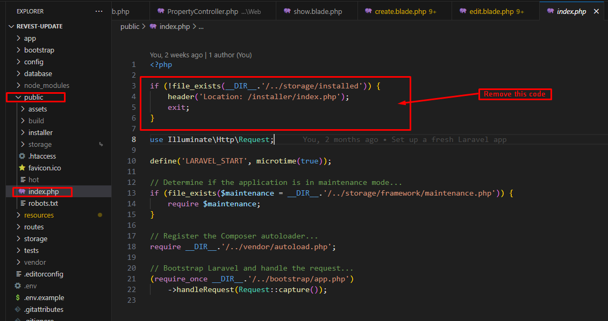
- Open your terminal and navigate to project root directory
- Run the command:
php artisan migrate --seedCopied - Run the command:
php artisan serve --port=8000Copied
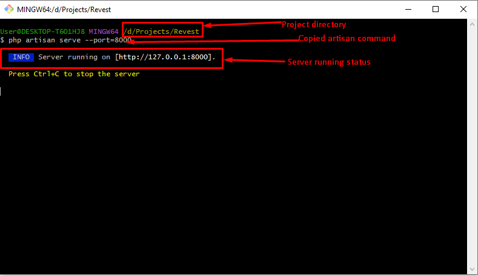
- Open http://127.0.0.1:8000 for frontend
- Open http://127.0.0.1:8000/admin for admin panel. Admin login: admin@gmail.com/admin

Admin Panel
Dashboard
Revest is a complete solution for real estate investment platform. It has a lot of features including property management, deposit and withdraw system, user management, transaction management, ticket management, email notification system, referral system, payment gateway management and so on.
Company Setup
Admin can customize company's information, logo and favicon, configs, social links, goole analytics, google recaptcha, seo information, email configs, and email templates
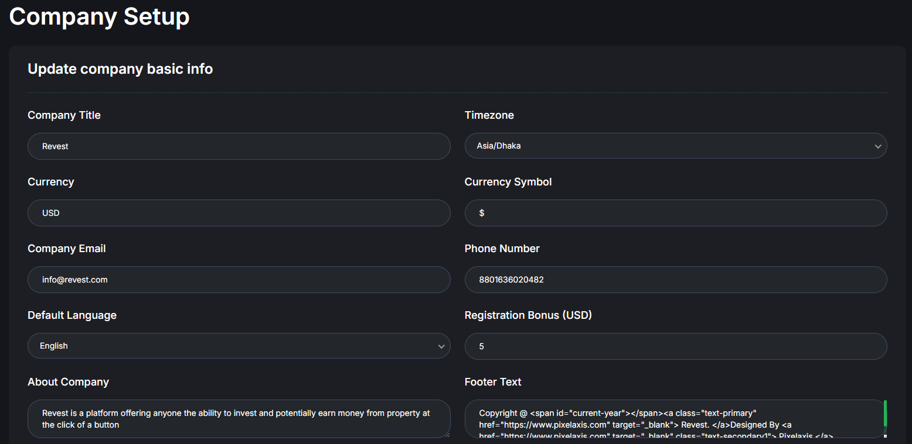 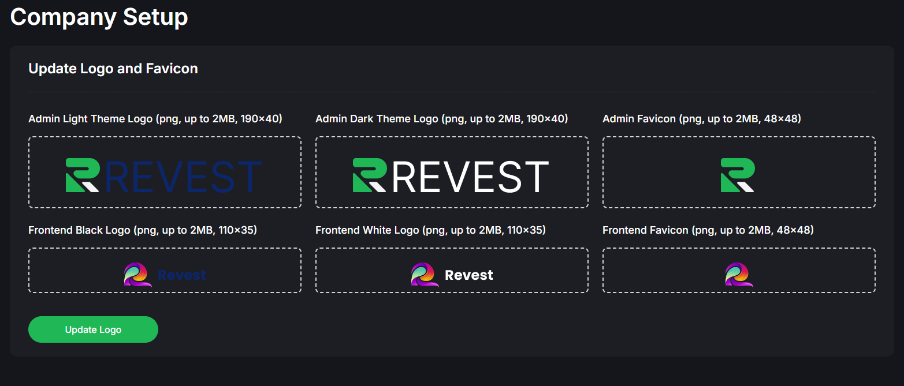 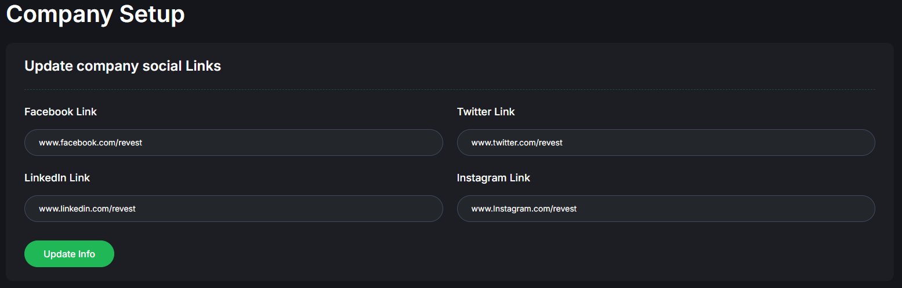 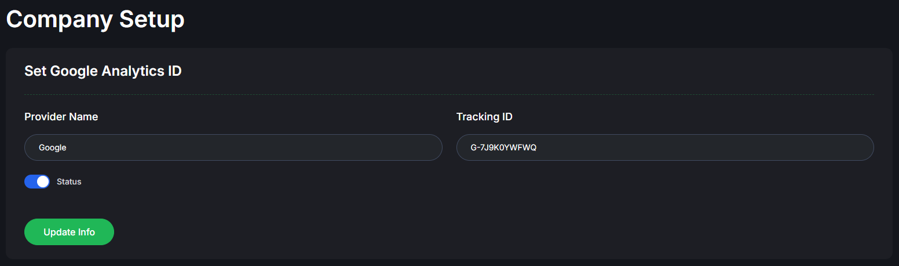 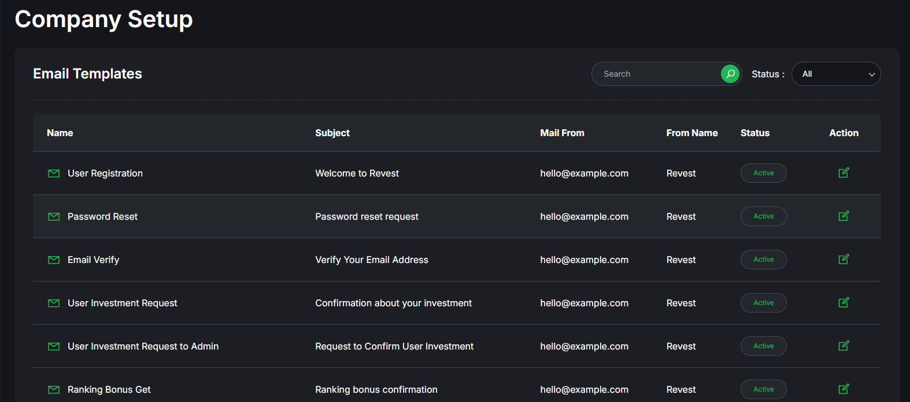
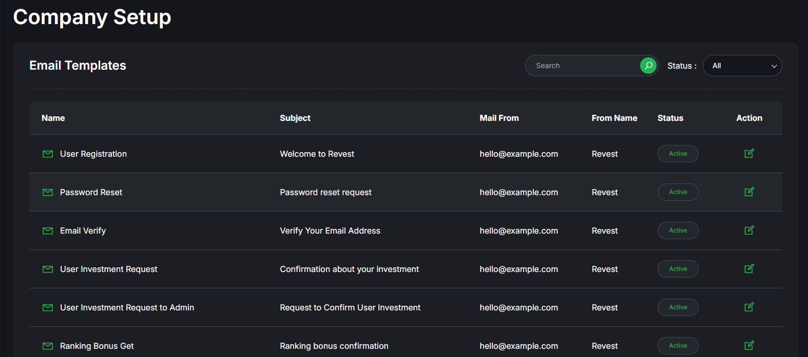
Property Management
-
Properties
In this section, admin can create, edit properties.
Property time setting also found in this section. In the action column, admin can update property reports and schedules. Active/Inactive status also found in this section
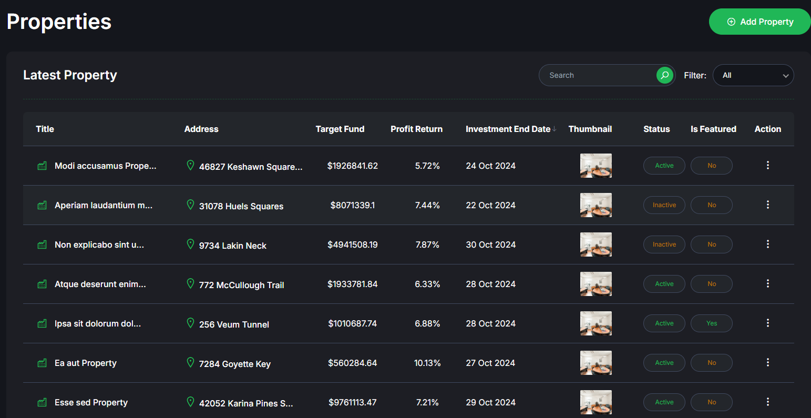 -
Property Category
In this section, admin can create, edit property categories.
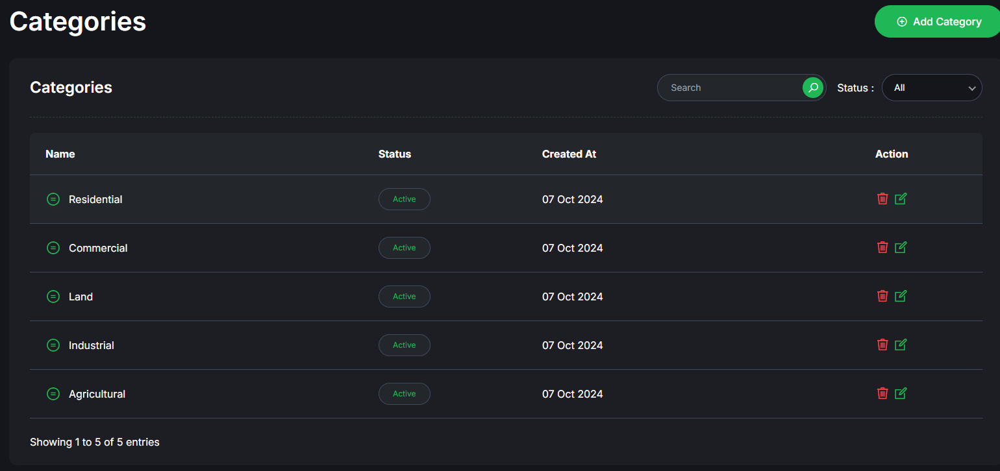 -
Property Amenity
In this section, admin can create, edit property amenities
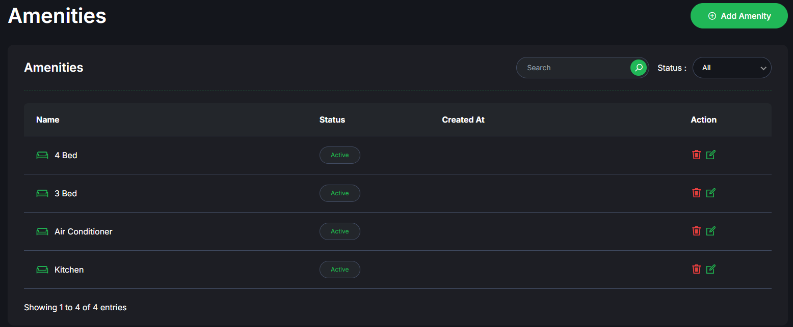 -
Property City
In this section, admin can create, edit property cities.
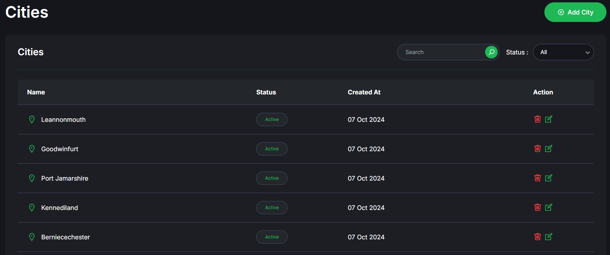 -
Property Profit Schedule
In this section, admin can create, edit property profit schedules.
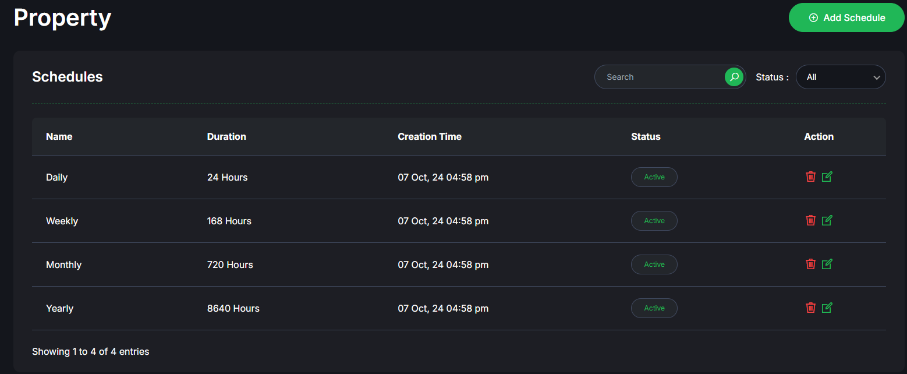 -
Add new property
In this section, admin can add new properties. Before starting the process, make sure you have created property category, property city, property profit schedule
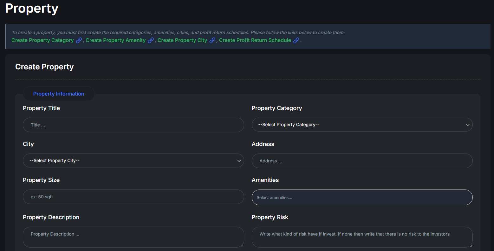
Invest
In this section, admin can review investment requests and approve or reject. Admin can also monitor running, completed and pending investment. In this module, admin also inspect the invest return time and other statistics
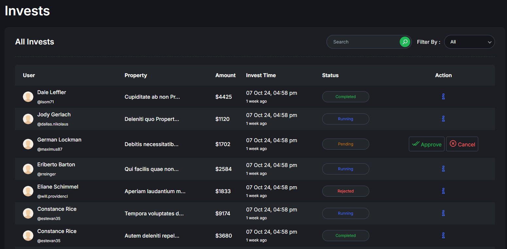Withdraw Management
-
Withdraw request
In this section, admin can review withdraw requests and approve or reject.
-
Withdraw method
In this section, admin can create, edit withdraw methods. Clicking on the + icon on the action column, admin can add field to the withdraw method
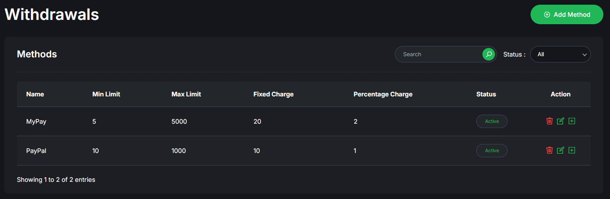
User Management
In this section, admin can see a list of registered users.

By clicking on user name or right side eye icon, admin can see user details. In this section, admin can logged in as user, ban user, update kyc and email verification status, and user profile information. From the right side, admin can make a quick transaction (add or substract balance) from user.
By clicking on 'i' icon, admin can see user information at a glance.
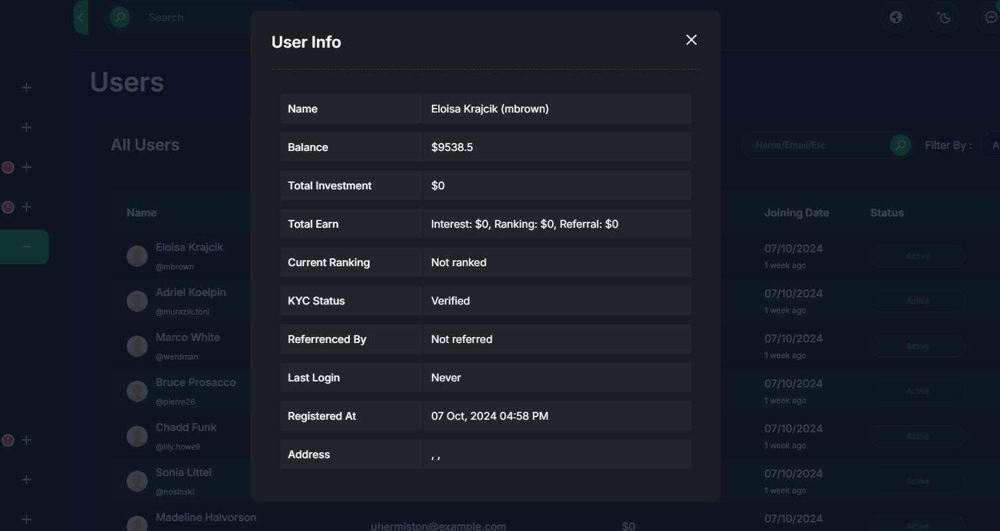In the KYC pending and KYC rejected section, admin can see user kyc request. Admin can preview the kyc document and approve or reject.
Last section of this module is notification sending section. Admin can send email notification to user by group. Available groups are all users, selected users, active users, pending invest users, Closed invest users, canceled invest users, Kyc verified/unverified users, and many more
Termilogies
Skip First: Number of users skip from the selected group
Per Batch: Number of users per batch from the selected group. Email sending will be done by batch by batch
Interval Between Batche: Number of seconds wait between each batch
Ticket Management
In the ticket management module, there are two sections: Open tickets and Closed tickets. User cannot reply to the closed tickets any more. But admin can re-open the closed tickets. In open ticket section, admin can see all open tickets and reply to the tickets. The tickets are sorted by its last message time. The number of each ticket right side indicates the number of user message after admin reply. User and admin both can attach files to each reply and download them.
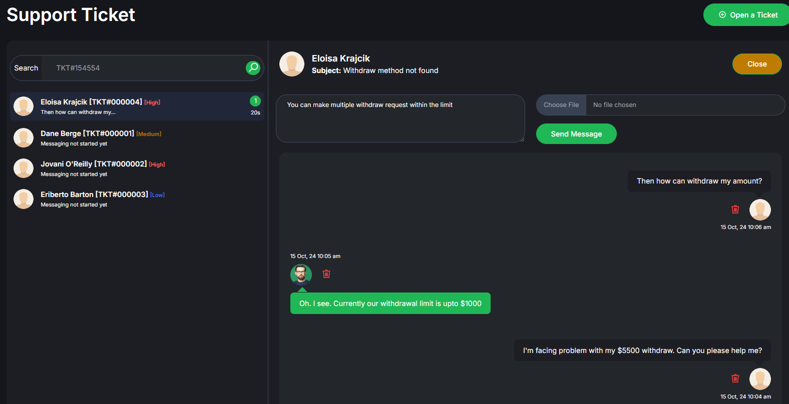Referral Setting
In the referral module, admin can configure referral bonuses. If a user referred by another user, he will get a certain amount of referral bonus. Referral bonus will be given to the referred user at the time of deposit, invest or interest.
Admin can update update bonuses of each type of event. To update, admin can click on 'Update' button. then put the number of level to giving bonus. After click generate button, the input fields are generated. Put each level bonus and click on 'Submit' button. The newly update bonus value will replaced the old one
In the later section of this module, the referral transaction logs will be shown. In this logs table, The total amount of referral bonus details will be found
User Ranking
In the user ranking module, admin can configure user ranking. User can see their ranking and their target to fill up to achive the ranking. After achive the target, user can get a certain amount of bonus.
Fron the right side info icon, admin can see user ranking details that how many user achived this ranking, total bounus get by users, and number of current users in this ranking
Transactions
In this section, admin can see all types of transactions that happened in the system. Some transaction have a details link found by the eye icon on the right side.
Subscribers
In this module, All subscribers list will be shown. Subscriber's location info will be shown if can captured by the tracker
From the upper right corner 'Send Mail' button, admin can send email to all subscribers
Blogs
In this module, Admin can confugure blogs that shown on the website. Admin can add, edit and delete blogs. Also it is possible to config blog tags and categories.
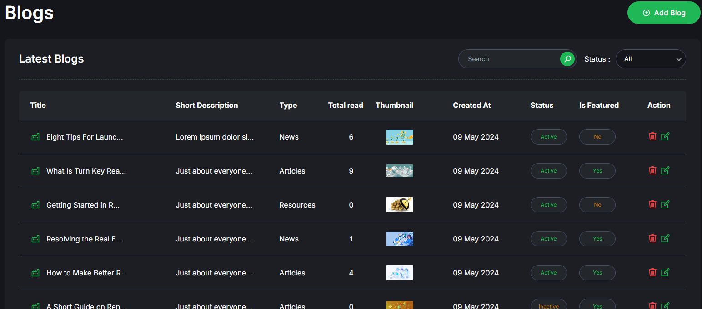Multi Language
In this module, Admin can configure languages for the website. It is possible to add as many languages as you want. The detail of the adding new language or update language found in top-right corner help button. To add new language, Follow the steps below:
- Click on 'Add Language' button from the left side navigation
- Download the language json file (Key) by clicking on 'Download File' found in the help modal 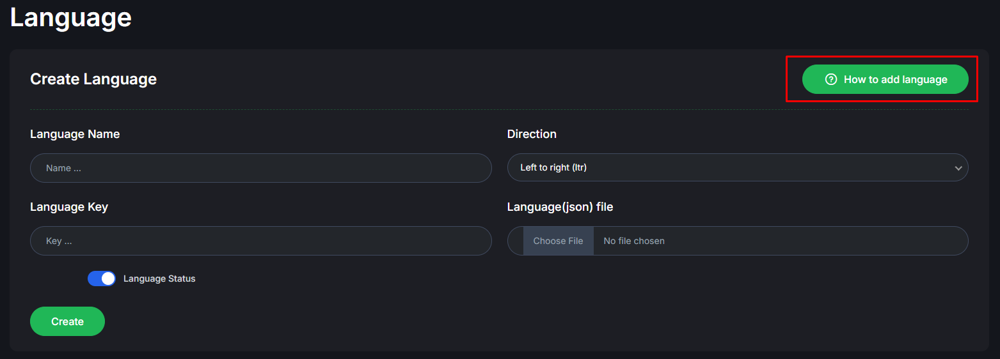
- Modify the json file as you want
- Input your language name(appeared on language change dropdown), Langusage key (For identifying the language uniquely), and upload the modified json file by clicking on 'Language(json) file'
- Click on 'Create' button to save
- After saving, you can see the language list. The newly added language will be shown in the list
- Change the language from the dropdown to effect the changes of the language 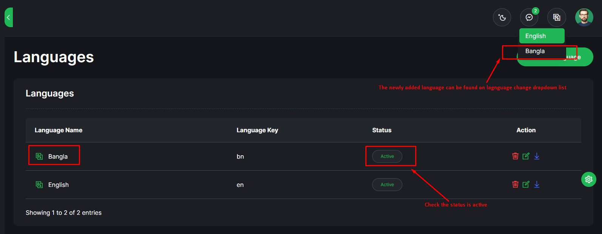
KYC Setting
KYC (Know your customer) is the process of verifying the identity of a user. Admin can configure KYC setting. Admin can take the information from user and verify it. If KYC Verification is active in Company Setup -> System Configs module and User is not kyc verified then user cannot make any transaction even get access to the dashboard in the system.
To add/modify the KYC form, Follow the steps below:
- Click the 'Add Field' button from the left side navigation
- Input the field name, field type, and options related to the field type.
- The Is Required option will be checked if the field is required
- Field Status will be checked if the field is display in the form
- Click the 'Create' button to save
- After saving, you can see the list of fields. The newly added field will be shown in the list
Payment Gateway
In this module, Admin can configure automated payment gateways. Admin can modify Active/Inactive status, config the gateway charges, transaction limits and other settings.
To modify the gateway configurations, Follow the steps below:
- Click the 'Edit icon' button
- Input the configs related to the gateway.
- The Is Required option will be checked if the field is required
- Field Status will be checked if the field is display in the form
- Click the 'Update' button to save
- After saving, the gateway will work as expected
Cronjob Setting
Cronjob is very useful for the automated tasks. To give the plan interest at right time, you must configure cronjob. Currently there are two cronjob types: Ranking, and Interest.
- Ranking is used to update ranking of users
- Interest is used to give plan interest
The ideal cronjob schedule is once per 5 minute. Once per minute is the best
You can see the cronjob logs in the Cronjob Logs page
Contacts
Contacts is the list of inquiry submitted from the frontend contact page.

Admin can send email to all contacts by the 'Send Email' button
Section Management
Section is the components of the frontend pages. If you want to modify the section content for your website your can do that from here
Multiple pages share the same section. Suppose you change to the about section, All the pages which has about section will be affected.
- Sections
- Edit Section 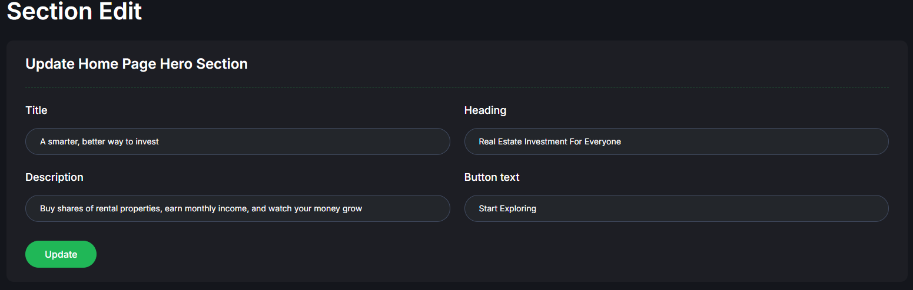
A list of frontend section displayed here. Admin can preview the section by clicking on the card image.
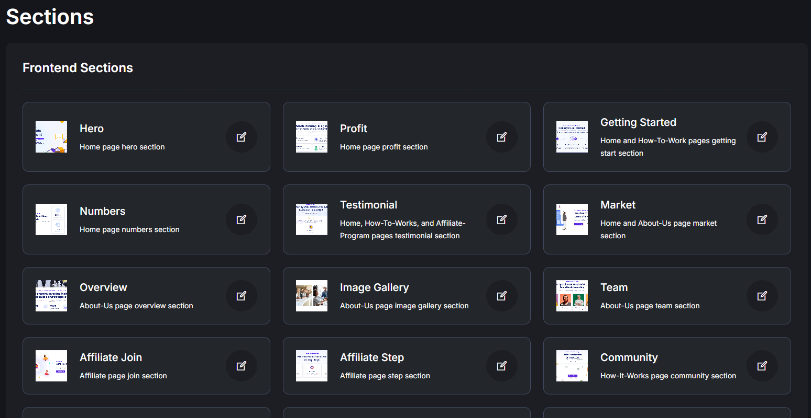Section Status
Admin can change the status of the section. If section status is inactive, the section will not be displayed on the frontend
User Dashboard
Home
User can see their account balance, withdrawals, invested and earning, investment chart and many more
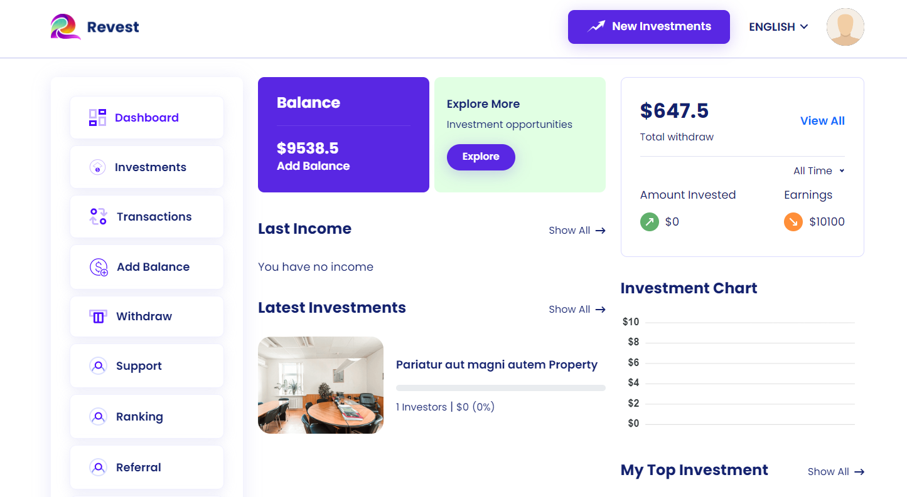User Deposit
To make a deposit, follow the steps below:
- Go to User Dashboard
- Click the 'Add Balance' button from the left side navigation
- Enter the deposit amount
- Select the payment method
- You can see the charges and limitations of the payment method on a modal after clicking on Add Balance button 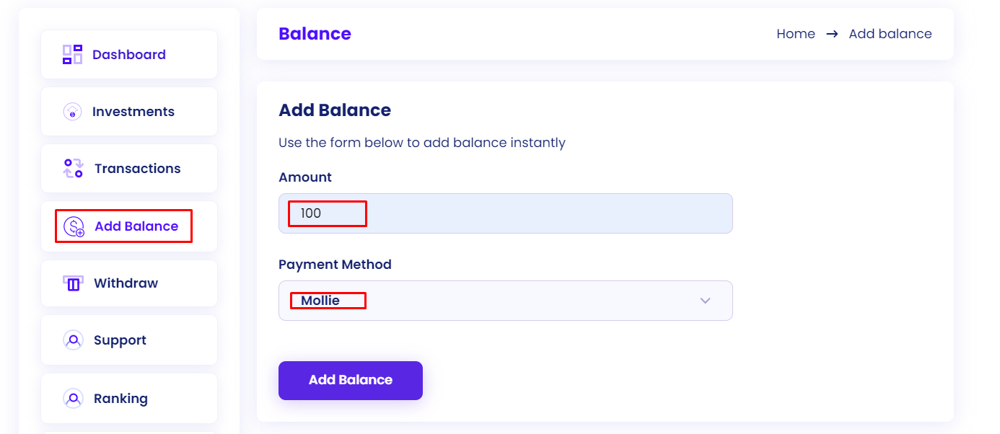
- Click the 'Confirm' button if everything is correct
- You will redirect to the payment page of the selected payment method
- Put your card details and click on 'Pay Now'
- If payment is successful, you will redirect to the user dashboard. You can see the success message
Withdraw
To Withdraw from your account, follow the steps below:
- Go to User Dashboard
- Click the 'Withdraw' button from the left side navigation
- Enter the withdraw amount. Current balance will be shown here
- Select the withdraw method
- You can see the charges and limitations of the withdraw method 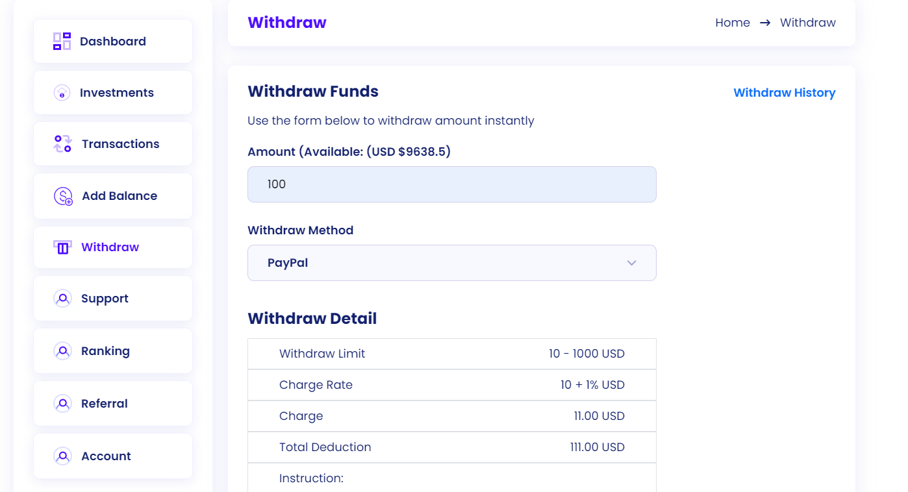
- Click the 'Withdraw' button if everything is correct
- You will redirect to the withdraw gateway information page of the selected withdraw method 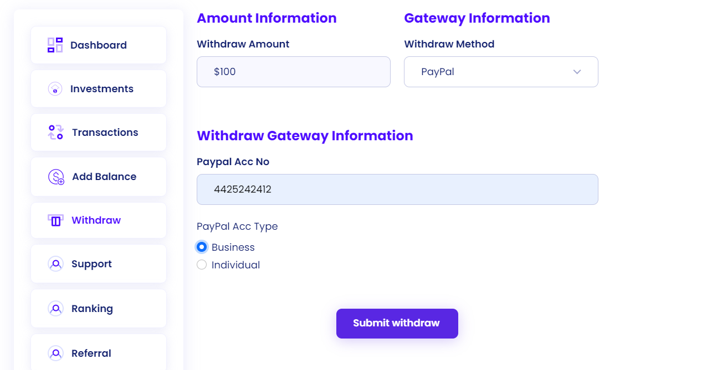
- Put the necessary information and click on 'Submit Withdraw' button
- If everything is correct, you will redirect to the dashboard home page and see the success message
- Admin will review the withdraw request and take necessary action accordingly
Referrals
Referral is a way to earn money by promoting your friends. Any user who referred by another user will get a certain amount of referral bonus. Referral bonus will be given to the referred user at the time of deposit, invest or interest.
Referral system works like a chaining system. The users who are directly referred by you is the first level referral user. The users who are referred by the first level user is the second level and so on. It is possible to refer unlimited times and gain unlimited referral bonus.
To get referral bonus, you must:-
- Referred to another user
- You can get referral links from your dashboard referrals section. Copy and share the link with your friends or family
- You can also share the referral link to the social media (Facebook, Twitter, etc.) by clicking on the share button.
- You will get a referral bonus at the time of the referred user deposit, interest, or invest

Transactions
This is the list of transactions that happened in the system for the user.
Edit Profile
In this section, user can edit their profile information. Also user can change their password.
-
General
In this section, user can edit their profile information
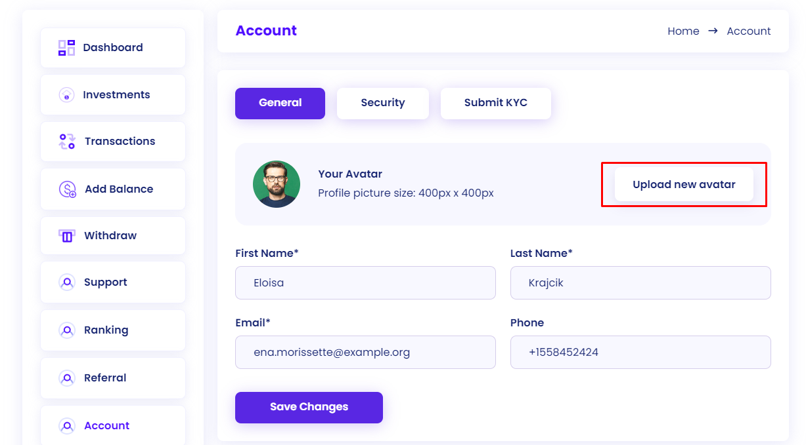 -
Security
In this section, user can change their password
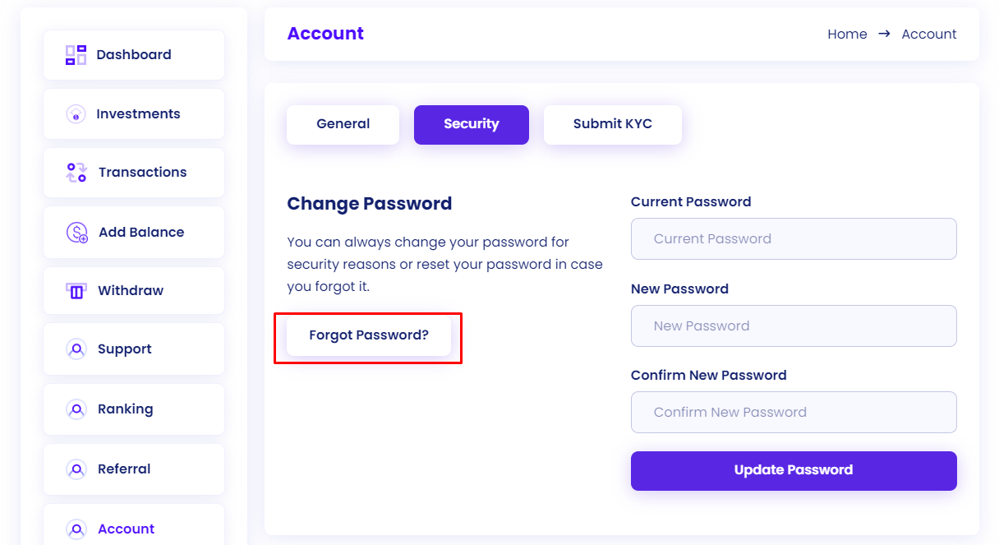 -
KYC Submition
In this section, user can submit their kyc documents
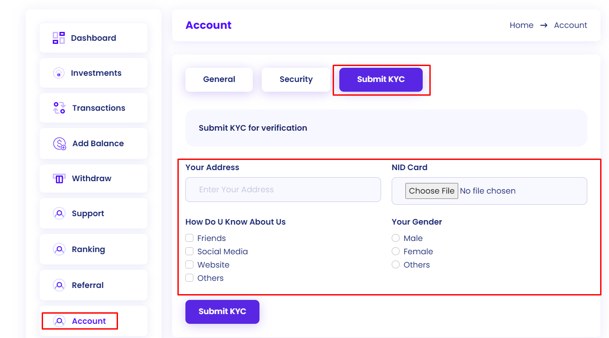After submitting kyc, admin will review and take necessary action.
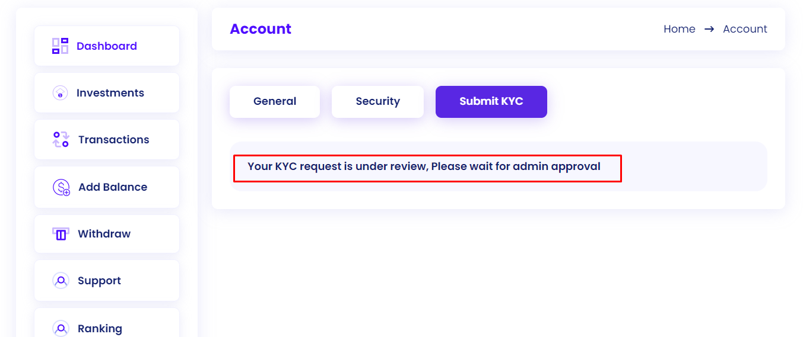After admin approved kyc, user will notified and see their kyc status

Support Ticket
In this section, user can create support ticket. Admin can reply to the support ticket. If a user closed the ticket, they cannot reopen it again but can view the replies. Admin can also close the ticket.
User and admin both can attach files to each reply and download them. The message is not refresh automatically. User need to refresh the page to see the new message.
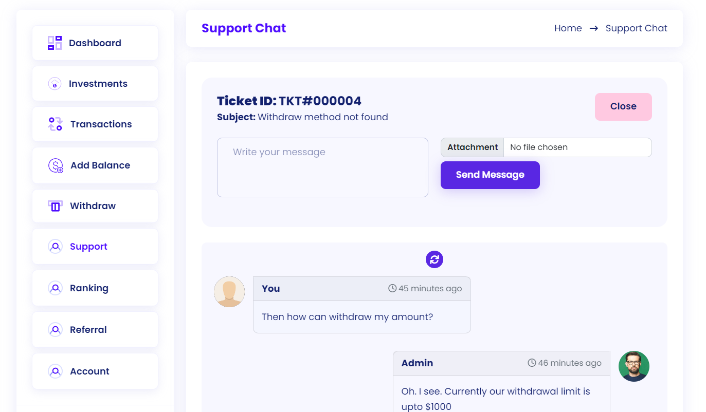Logout
The logout button is located at the bottom of the user dashboard's side navigation menu.
By clicking on the logout button, user will be logged out from the system and redirected to the login page
Support
Support Scope
Included in Free Support Scope:
- Fixing bugs
- Helping clients in changing site contents by sending instructions that couldn’t be covered by documentation
NOT Included in Free Support Scope:
- Any type of custom changes
- Any type of request to update clients’ site contents
Paid Support Scope:
Paid support is not a part of Free Support when you purchase the template from themeforest. We understand that some clients need custom changes while using our template. For that we kept an option for paid support which includes:
- Custom change request
- Custom Features
- Custom Support
Support Ticket
Please send your support request here: Support Request. You will response within 1 business day.
Regards,
Pixelaxis Support Team